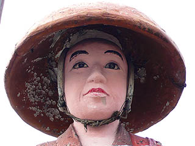
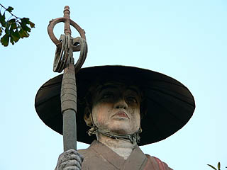

番割観音十番/愛知県名古屋市
名古屋市の熱田区から中川区にかけて地図を見ていると不思議な地名がある。
国道一号線沿いに東から西に熱田区一番、二番、三番…と、中川区十一番町まで並んでいるのだ。
これは番割観音と呼ばれる霊場の札所に由来している地名なのである。
何でも江戸時代初期にこの一帯、熱田新田を干拓した際に三十三ヶ所の霊場を設けたものだとか。
つまり実際には三十三番まであるのだが十一番までが現在まで地名として残っている、というわけ。
その十番、十一番は住宅地の中にある小さな札所だ。
狭い境内には小さなお堂とジャングルジム、そして2体のコンクリ像が寂しそうに佇んでいる。
お堂の前にはおびんずるさまがいた。
わざわざお堂に上がって撫でないでも済むように「撫で棒」が置いてあった。
直撫で当たり前のおびんずる様においてこんなシステムは初めて見たぞ。
合理的というか横着というか…
さてさて。
問題のコンクリ像2体を拝見しましょ。
まずは弘法大師像。

昭和４８年９月の作。修行大師像、という事でよろしいんでしょうかね。
目尻、眉尻、口の端が尾張旭の厄除弘法や春日井の駅前弘法にそっくり。

これまた銘はないもののほぼ浅野作品、ということで…
浅野確率90％！ズンズンズン！（大川興業だよ、わかるかな〜）
巻いたゴザを背にしてます。
一方お隣は十一面観音。
昭和４８年１１月の作。
この観音サマも状況からいってほぼ浅野作品（推定確率85％）といっていいだろう。
頭上のミニヘッドまで浅野顔なのがイイですね。
光背がチャリのタイヤみたいなのもイイ。
また、画像では見難いが衣にちゃんと宝珠の模様が描き込まれている。
あちこちひび割れが発生している。
そろそろメンテの時期ではないでしょうか？
十一面観音の脇には吉野ヶ里遺跡みたいなロウソク立てが。
かなりやっつけ仕事っぽいがコレも浅野作品…なのか？ まあ、状況的にそうなんだろうなあ。
花筒までコンクリでつくる念の入れよう。
これじゃあ花筒の中の汚れた水の掃除が出来ないじゃないか！…と思ったら全部造花でした…
折角なので童心に帰ってジャングルジムに登ってみました。
ちなみにここにいる間、参拝客はいなかったが近所の人達が結構散歩に来てました。
で、皆さんジャングルジムの天辺でカメラを構えている怪しい人物を見てみぬふり。
…ああ因果者はつらいよ…
情報提供；僕の自由研究 ものぐさ太郎さんです
2008.02.
珍寺大道場 HOME